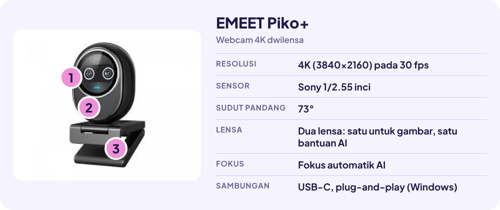
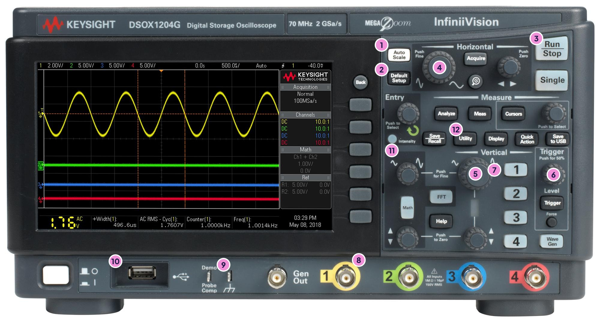
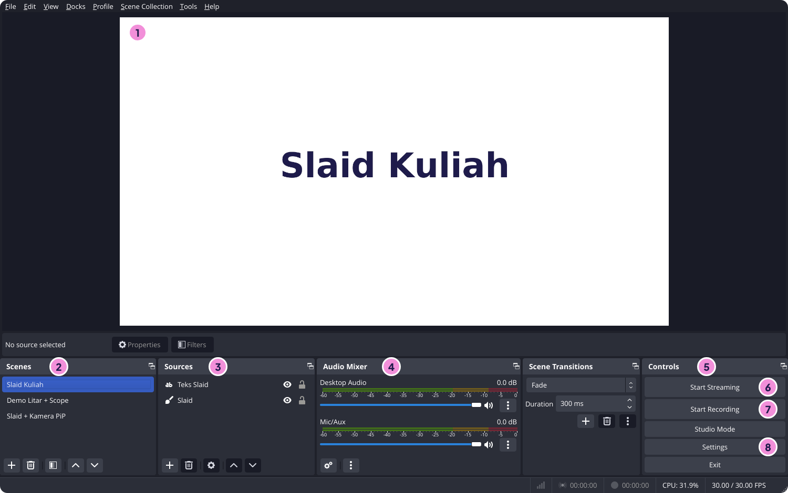
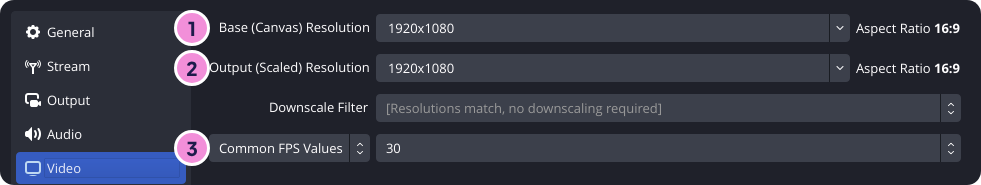
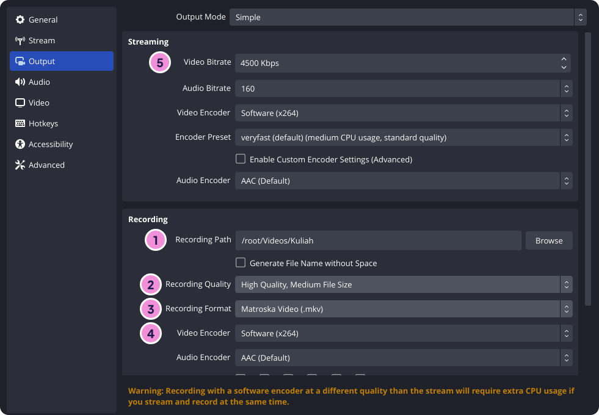
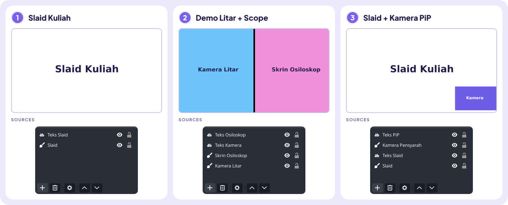
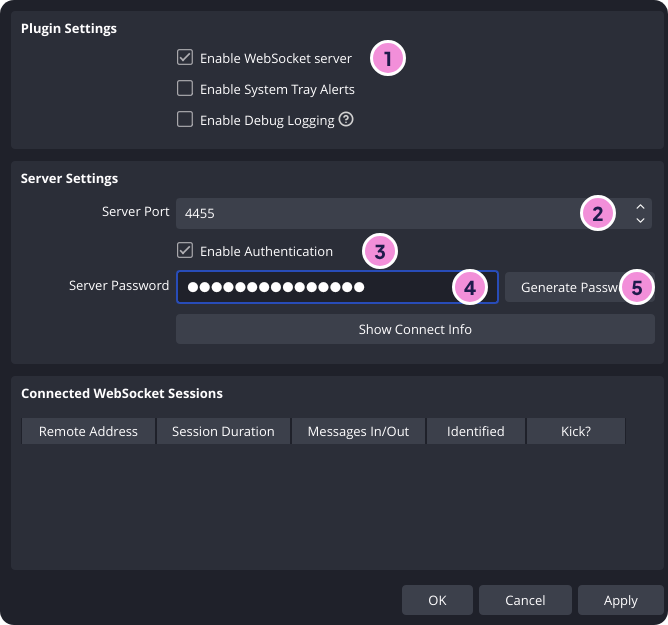
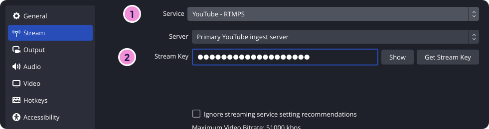
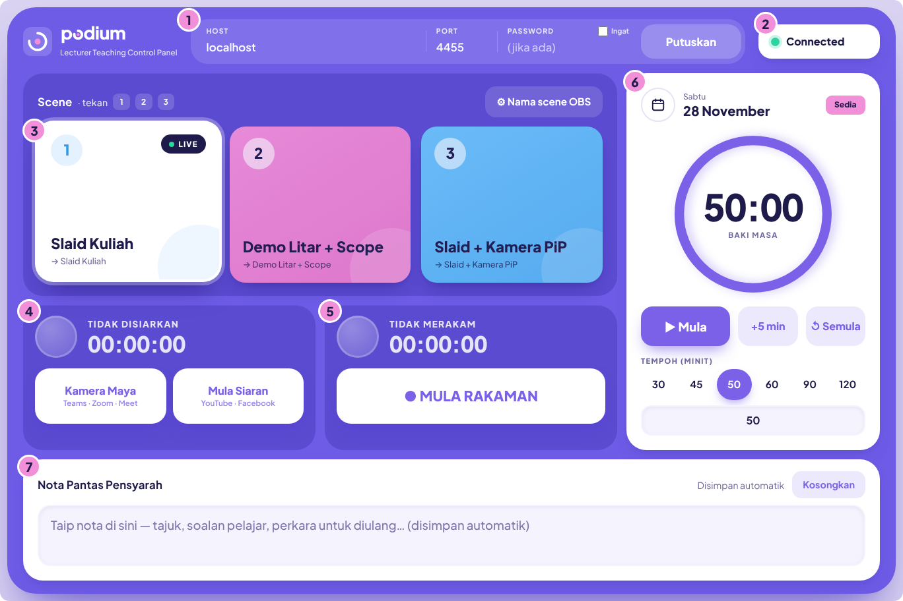
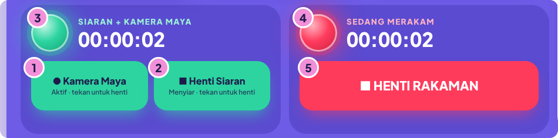

Manual Pengguna
Sediakan Surface, kamera, OBS dan osiloskop. Mengajar secara langsung, dan simpan video untuk rujukan pelajar.
Isi kandungan
Ikut mengikut nombor. Setiap langkah pendek dan ada kotak semak.
Gambaran sistem
BAB APersediaan
Lakukan sekali sahaja. Selepas itu, kuliah seterusnya hanya perlukan kira-kira 10 minit.
- 1Senarai barangsemak barang
- 2Setup laptop≈ 10 minit
- 3Setup kamera≈ 10 minit
- 4Setup osiloskop≈ 15 minit
- 5Setup OBS≈ 15 minit
Senarai barang
Semak semua barang sebelum bermula. Tandakan kotak apabila sudah ada.
WAJIB Barang utama
- Microsoft SurfacePro, Laptop atau Go · Windows 10/11 · RAM 8 GB ke atas
- Pengecas laptop
- Kamera EMEET Piko+Kabel USB-C disertakan. Jika laptop hanya ada USB-A, sediakan penyesuai
- Tripod atau lengan kameraSemak sama ada Piko+ boleh dipasang pada tripod anda; jika tidak, guna pengapit atau penyangga yang stabil
- MikrofonPiko+ ada mikrofon terbina dalam, tetapi mikrofon klip (lavalier) lebih jelas jika pensyarah jauh
- Osiloskop Keysight DSOX1204A + probeProbe yang disertakan, dan kabel kuasa
- Kabel LAN (RJ-45)Untuk menghantar paparan osiloskop ke laptop
- Router / suis rangkaian (atau soket LAN)Laptop dan osiloskop mesti dalam rangkaian yang sama. Jika laptop tiada port LAN, perlu penyesuai USB-C ke Ethernet
- Hab USB-C (USB-A + Ethernet)Perlu jika Surface anda hanya mempunyai port USB-C (kebanyakan Surface Pro terkini)
- Sambungan internetPerlu untuk siaran langsung. Disyorkan kabel LAN; jika Wi-Fi, duduk dekat router
- Litar / papan projek (breadboard) untuk demo
PILIHAN Digalakkan
- Kabel USB (USB-A ke USB-B)Untuk perisian BenchVue melalui port USB di belakang osiloskop
- Hab USB berkuasa / penyesuai USB-C ke USB-ASurface mempunyai port yang sedikit
- Kamera kedua (muka pensyarah)Untuk scene 3. Jika tiada, guna Piko+ yang sama
- Earphone / headphoneElak bunyi bergema semasa mesyuarat dalam talian
- Lampu mejaCahaya sisi supaya litar jelas
- Skrin kedua / projektor
- Cakera luaran / pemacu penUntuk salinan fail rakaman
- Tuala kecil / pembersih lensa
Setup laptop
Matlamat: laptop tidak tersangkut, tidak berbunyi notifikasi, dan ada ruang untuk rakaman. Masa: ≈ 10 minit.
- Palamkan pengecas
Rakaman video menggunakan banyak bateri. Pastikan pengecas dipasang sepanjang kuliah.
- Pasang OBS Studio
Muat turun dari obsproject.com, pilih Windows, buka fail dan tekan Next sehingga siap. Guna versi 28 atau lebih baharu.
SEMAKDalam OBS terdapat menu Tools → WebSocket Server Settings. Jika tiada, kemas kini OBS. - Set mod kuasa kepada prestasi terbaik
Settings → System → Power & battery → Power mode → Best performance
- Jangan biarkan skrin tidur
Settings → System → Power & battery → Screen and sleep → pilih Never (semasa plugged in).
- Matikan notifikasi
Supaya tiada mesej muncul dalam rakaman.
Settings → System → Notifications → hidupkan Do not disturb
- Pastikan ruang simpanan mencukupi
Kosongkan sekurang-kurangnya 20 GB. Satu jam rakaman ≈ 2–5 GB.
Settings → System → Storage
- Tutup program lain
Tutup Teams, Zoom, muat turun, dan tab pelayar yang banyak. Tangguhkan kemas kini Windows.
- Pasang kabel ke port yang betul
Guna port USB 3 (biasanya biru atau bertanda SS) untuk kamera. Jika port tidak cukup, guna hab USB berkuasa atau penyesuai USB-C ke USB-A. Untuk paparan osiloskop, sambungkan juga ke rangkaian (kabel LAN atau penyesuai USB-C ke Ethernet).
TIPJika gambar kamera tersangkut, pindahkan kamera ke port USB 3 yang tidak dikongsi dengan peranti lain. - Surface: guna hab USB-C
Kebanyakan Surface Pro terkini hanya ada port USB-C. Sambung hab USB-C (dengan port USB-A dan Ethernet) untuk mikrofon, kabel LAN osiloskop dan kabel lain. Sambung Piko+ terus ke port USB-C Surface jika boleh.
- Surface: elak panas dan penurunan prestasi
Surface (terutama Pro) boleh memperlahankan prestasi apabila panas. Letak di tempat berudara, jangan tutup dengan kertas atau kain, dan guna pengecas asal. Jika Surface tersangkut semasa siaran dan rakaman serentak, lihat Bahagian 9.
- Surface: semak jenis pemproses
Surface Pro 11 dan Surface Laptop 7 menggunakan pemproses Snapdragon (ARM). Pada obsproject.com, pilih muat turun untuk Windows ARM jika ada, dan pastikan kamera serta mikrofon dikesan. Surface Intel menggunakan muat turun Windows biasa.
- Surface: guna sentuhan untuk Podium
Podium direka untuk skrin sentuh. Tekan Win + ← untuk letak Podium pada separuh kiri skrin dan OBS pada separuh kanan, supaya anda boleh menyentuh Podium sambil melihat OBS.
- (Pilihan) Guna dua skrin
Tekan Win + P → Extend. Letak slaid pada skrin projektor dan panel Podium pada skrin Surface.
Setup kamera (EMEET Piko+)
Matlamat: pelajar nampak litar dengan jelas, tanpa gambar yang tiba-tiba kabur atau berkelip. Masa: ≈ 10 minit.

- Letak kamera di atas litar (Rajah 3.2)
Pasang pada tripod atau lengan, kira-kira 40 cm di atas papan litar, menghala ke bawah. Pada jarak ini bingkai meliputi kira-kira 50–60 cm lebar.
UJIPiko+ direka untuk wajah di meja. Jarak fokus dekat untuk litar tidak dapat disahkan daripada sumber yang saya boleh baca. Jika gambar kabur pada 40 cm, naikkan kamera ke 50–60 cm sehingga tulisan komponen tajam. - Sambung dengan USB-C
Cucuk kabel USB-C yang disertakan ke laptop. Windows memasang pemacu secara automatik (plug-and-play). Untuk gambar 4K, guna port USB 3 atau USB-C.
- Atur cahaya
Letak lampu di sisi litar. Elakkan cahaya terang di belakang litar. Elakkan pantulan pada skrin atau papan litar.
- Pilih kamera dalam OBS
Dalam OBS, tekan + di Sources → Video Capture Device → beri nama “Kamera Litar” → pilih EMEET Piko+.
Tetapkan Resolution/FPS Type: Custom, resolusi 1920×1080, FPS 30.
TIPPiko+ boleh 4K pada 30 fps, tetapi kanvas OBS dalam manual ini ialah 1080p. Untuk kuliah, 1080p sudah cukup tajam dan lebih ringan untuk laptop. - Matikan ciri AI yang mengganggu
Piko+ mempunyai fokus automatik AI dan pengesanan wajah. Untuk demo litar, fokus boleh tiba-tiba bertukar apabila tangan atau muka masuk bingkai. Jika perisian EMEET (dari laman sokongan EMEET) menyediakan pilihan penjejakan / auto framing, matikan; jika ada pilihan fokus manual, gunakannya dan tetapkan pada papan litar.
Kemudian dalam OBS: klik kanan sumber → Properties, dan matikan pilihan auto bagi Focus, Exposure dan White Balance jika tersedia.
NOTANama pilihan dan perisian EMEET tidak dapat disemak dari sini. Jika berbeza, rujuk buku panduan Piko+. - Semak bingkai
Tulisan pada komponen boleh dibaca? Gambar tidak berubah fokus apabila tangan masuk? Tangan pensyarah tidak menutup litar? Jika ya, kamera sudah sedia.
- (Pilihan) Guna mikrofon Piko+
Piko+ mempunyai mikrofon terbina dalam. Jika mahu menggunakannya, pilih mikrofon EMEET di Settings → Audio → Mic/Auxiliary Audio. Mikrofon klip lebih jelas jika pensyarah jauh dari kamera.
Setup osiloskop (Keysight DSOX1204A)
Matlamat: gelombang yang stabil, jelas, dan sampai ke OBS. Masa: ≈ 15 minit.
2. Jangan ukur voltan elektrik rumah (mains) dengan probe biasa.
3. Jangan melebihi voltan maksimum yang tertera pada probe dan osiloskop.
4. Matikan kuasa litar sebelum mengubah sambungan.

Nota: foto ini model DSOX1204G. Model A (anda) tiada penjana gelombang terbina dalam, jadi tiada port Gen Out dan butang Wave Gen; kawalan lain pada panel serupa.
- Letak dan hidupkan osiloskop
Letak di atas meja yang stabil, berhampiran litar. Skrin menghadap pensyarah. Palamkan kuasa, hidupkan, dan tunggu sehingga skrin utama muncul.
- Pasang probe (Rajah 4.2)
Cucuk probe ke CH1 (dan CH2–CH4 jika perlu). Pada probe ada suis ×1 / ×10. Pilih ×10 untuk kebanyakan kerja.
Pada menu saluran (tekan nombor saluran, contoh 1), tetapkan Probe kepada 10:1 supaya sepadan dengan suis.
- Kompensasi probe (sekali setiap kali guna probe baharu) (Rajah 4.3)
- Sambung hujung probe ke terminal Demo / Probe Comp di panel depan (penunjuk 9 dalam Rajah 4.1). Klip bumi ke terminal bumi di sebelahnya (simbol bumi).
- Tekan Default Setup, kemudian Auto Scale. Anda patut nampak gelombang segi empat.
- Pusing skru kecil pada probe sehingga penjuru gelombang tegak dan rata (tidak bulat atau bertanduk). Ulang untuk setiap probe.
- Laras paparan asas
- Volts/div (tombol menegak): gelombang memenuhi kira-kira 3–6 petak.
- Time/div (tombol mengufuk): nampak 2–5 kitaran.
- Trigger: jenis Edge, Rising, aras (tombol Level) di tengah gelombang.
Tidak pasti? Tekan Auto Scale dahulu, kemudian halusi.
- Jadikan paparan jelas untuk dipaparkan
- Tekan butang Intensity (di bawah tombol Entry; penunjuk 11 dalam Rajah 4.1), kemudian putar tombol Entry untuk menaikkan kecerahan gelombang.
- Untuk grid dan pilihan paparan lain, tekan Display dan guna softkey di kanan skrin.
- Tutup menu yang tidak perlu supaya gelombang tidak terlindung.
NOTANama softkey dalam menu Display boleh berbeza mengikut versi firmware. - Pilih cara paparan osiloskop masuk ke OBS
DSOX1204A tiada port video, jadi tiada kad tangkap. Pilih satu cara di bawah. Cuba A dahulu.
| Pilihan | Cara | Kebaikan / Kelemahan |
|---|---|---|
| A. LAN + pelayar disyorkan | Sambung kabel LAN, buka alamat IP osiloskop dalam Chrome/Edge untuk melihat dan mengawal skrin. Dalam OBS tambah Window Capture pada tetingkap pelayar itu. | ✔ Tiada perisian dan tiada kad tangkap ✘ Perlu rangkaian yang sama; sedikit lengah |
| B. USB + BenchVue | Pasang Keysight BenchVue (aplikasi Oscilloscope) dan IO Libraries. Sambung kabel USB ke port USB belakang osiloskop. Dalam OBS tambah Window Capture pada tetingkap BenchVue. | ✔ Tidak perlu rangkaian ✘ Perlu pasang perisian; semak lesen dan versi |
| C. Kamera ke skrin pilihan terakhir | Halakan kamera (Kamera B atau kamera lain) tegak lurus ke skrin osiloskop. Kunci fokus dan pendedahan. Kurangkan pantulan cahaya. | ✔ Sentiasa boleh ✘ Kurang tajam; boleh ada corak berkelip (moiré) |
Langkah Pilihan A: LAN + pelayar
- Sambung kabel LAN
Dari port LAN di belakang osiloskop ke router/suis yang sama dengan laptop.
- Cari alamat IP osiloskop
Tekan Utility → I/O → LAN Settings dan catat alamat IP (contoh 192.168.1.50).
NOTASusunan menu boleh berbeza mengikut firmware. Jika tidak jumpa, cari “LAN” dalam buku panduan. - Buka halaman web osiloskop
Pada laptop, buka Chrome atau Edge dan taip http:// diikuti alamat IP itu. Pilih halaman kawalan jauh (Remote Front Panel / Browser Web Control) untuk melihat skrin osiloskop.
- Tangkap tetingkap itu dalam OBS
Dalam OBS: + → Window Capture → pilih tetingkap pelayar itu. Klik kanan sumber → Transform → Edit Transform dan isi Crop untuk membuang bar alamat dan tab.
- Uji dengan isyarat contoh
Gunakan isyarat Demo / Probe Comp atau penjana fungsi. Lihat dalam Preview OBS: gelombang mesti boleh dibaca dari jauh.
SEMAKGelombang stabil, jelas, dan tidak terpotong dalam gambar OBS.
Setup OBS
Matlamat: 3 scene yang bernama tepat, bunyi jelas, dan rakaman disimpan dengan selamat. Masa: ≈ 15 minit.
Kenali antara muka OBS

A. Tetapan asas
- Buka OBS, jalankan wizard
Kali pertama, OBS menunjukkan Auto-Configuration Wizard. Pilih Optimize just for recording → Next. Pilih 1920×1080, FPS 30 → Apply Settings.
- Semak video
Settings → Video (Rajah 5.2)
Base (Canvas) Resolution 1920×1080 · Output (Scaled) Resolution 1920×1080 · Common FPS Values 30.
- Tetapan rakaman
Settings → Output → Output Mode: Simple → Recording (Rajah 5.3)
- Recording Path: pilih folder yang mudah dicari (contoh Videos\Kuliah).
- Recording Quality: High Quality, Medium File Size.
- Recording Format: mkv (selamat jika komputer terhenti secara tiba-tiba).
- Video Encoder (di bawah Recording): pilih Hardware (QSV / NVENC / AMD) jika ada. Jika tiada, pilih Software (x264).
TIPUntuk menukar mkv kepada mp4 selepas kuliah: File → Remux Recordings. - Pilih mikrofon
Settings → Audio → Mic/Auxiliary Audio
Pilih mikrofon anda. Tekan OK.


B. Bina 3 scene (nama mesti tepat)

- Cipta scene (Rajah 5.4)
Di kotak Scenes (bawah kiri), tekan + tiga kali dan namakan setiap satu seperti di atas.
- Scene “Slaid Kuliah”
Pilih scene → + di Sources → Display Capture (seluruh skrin) atau Window Capture (tetingkap PowerPoint sahaja). Namakan “Slaid”.
NOTAJika skrin tangkapan hitam, tukar kepada Display Capture, atau jalankan OBS sebagai Administrator. - Scene “Demo Litar + Scope”
Tambah Video Capture Device “Kamera Litar” (EMEET Piko+) dan sumber osiloskop (Window Capture pada pelayar atau BenchVue untuk Pilihan A/B; Video Capture Device kamera kedua untuk Pilihan C). Seret dan kecilkan kedua-duanya supaya kiri dan kanan sama besar.
- Scene “Slaid + Kamera PiP”
Tekan + → Add Existing → pilih “Slaid”. Kemudian tambah kamera (Kamera B, atau Kamera Litar jika hanya satu) dan seret ke penjuru kanan bawah. Tarik sudut kotak untuk mengecilkannya.
- Semak bunyi
Bercakap dalam mikrofon dan lihat bar Mic/Aux di Audio Mixer. Bar patut kerap sampai kuning dan tidak menyentuh merah. Laras gelangsar jika terlalu kuat atau perlahan.
C. Hidupkan WebSocket (supaya Podium boleh mengawal OBS)

- Buka tetapan WebSocket
Tools → WebSocket Server Settings
- Tetapkan (Rajah 5.5)
- Tanda Enable WebSocket server.
- Server Port: 4455.
- Tanda Enable Authentication dan tetapkan Server Password (atau tekan Generate Password). Catat kata laluan ini.
- Tekan OK.
- Rakaman ujian 10 saat
Tekan Start Recording, bercakap sebentar, kemudian Stop Recording. Buka File → Show Recordings dan mainkan fail itu.
SEMAKGambar jelas, bunyi ada, dan fail boleh dimainkan.
D. Sediakan siaran langsung

- Kamera Maya (untuk Teams, Zoom, Google Meet)
Tiada apa perlu dipasang dalam OBS 28 ke atas. Podium menghidupkannya dengan butang Kamera Maya. Untuk menguji tanpa Podium, tekan Start Virtual Camera pada kotak Controls OBS (butang ini ada pada OBS Windows).
- Siaran ke YouTube atau Facebook (pilihan) (Rajah 5.6)
Settings → Stream → Service: YouTube - RTMPS (atau Facebook Live)
Tekan Connect Account atau tampal Stream Key, kemudian OK. Kunci siaran diperoleh dari YouTube Studio → Go Live.
PENTINGJangan kongsi kunci siaran kepada sesiapa. Siapa yang ada kunci boleh menyiar pada saluran anda. Tetapkan siaran sebagai Unlisted supaya hanya pelajar yang ada pautan boleh menonton. - Tetapan siaran
Settings → Output → Streaming
Video Bitrate ≈ 4500 Kbps (1080p, 30 fps), Audio Bitrate 160. Kelajuan muat naik internet sekurang-kurangnya 8 Mbps; guna kabel LAN jika boleh.
- Siaran dan rakaman serentak
Boleh, dan disyorkan: rakaman tempatan ialah salinan keselamatan jika internet terputus. Jika Surface tersangkut, tukar Settings → Output → Recording Quality kepada Same as stream. Nota: OBS memberi amaran bahawa rakaman dengan kualiti ini tidak boleh dijeda, dan mutu rakaman sama seperti siaran.
BAB BMengajar
Gunakan setiap kali anda mengajar: sambung Podium, kemudian mengajar secara langsung dan simpan video untuk pelajar.
- 6Sambung Podium≈ 3 minit
- 7Mengajar langsung & simpan videopilih cara
Sambung Podium
Podium ialah panel sentuh untuk menukar scene, merakam dan mengira masa. Masa: ≈ 3 minit.

- Buka Podium (Rajah 6.1)
Dalam Chrome atau Edge pada laptop yang sama dengan OBS, buka lecturer-control-panel.vercel.app. Anda juga boleh membuka fail index.html terus.
TIPTambah ke bar penanda buku (bookmark) supaya mudah dibuka semula. - Isi sambungan
Host = localhost · Port = 4455 · Password = kata laluan WebSocket tadi. Tanda Ingat jika laptop ini peribadi.
- Tekan “Sambung”
Status berubah kepada ● Connected. Jika tidak berjaya, lihat Bahagian 9.
- Uji tiga scene
Sentuh kad atau tekan 1 2 3 pada papan kekunci. Kad yang aktif akan menunjukkan LIVE dan scene dalam OBS bertukar.
NOTAKad bertanda “TIADA DALAM OBS”? Tekan ⚙ Nama scene OBS dan pilih nama yang betul daripada senarai. - Siaran langsung (pilihan)
Kad Siaran Langsung ada dua butang: Kamera Maya (untuk Teams, Zoom, Meet) dan Mula Siaran (YouTube, Facebook). Apabila aktif, lampu dan butang bertukar hijau. Untuk berhenti, tekan dua kali. Cara guna: Bahagian 7.
- Mula dan henti rakaman
Tekan MULA RAKAMAN. Lampu merah menyala dan masa berjalan. Untuk berhenti, tekan dua kali (tekan pertama meminta pengesahan). Rakaman ini boleh dikongsi kepada pelajar selepas kuliah (Bahagian 7).
- Pemasa kuliah
Pilih tempoh (30, 45, 50, 60, 90, 120 minit atau taip sendiri) → Mula. Pemasa bertukar kuning pada 5 minit terakhir, coral pada 1 minit terakhir, dan berbunyi apabila tamat.
- Nota pantas
Taip di kotak bawah. Nota disimpan automatik dan masih ada walaupun halaman dimuat semula.
Mengajar langsung & simpan video
Pilih cara anda mengajar. Anda boleh mengajar secara langsung dan menyimpan video untuk rujukan pelajar pada masa yang sama.
| Cara | Sesuai untuk | Butang Podium |
|---|---|---|
| 1. Mesyuarat dalam talian | Kelas dalam Teams, Zoom atau Google Meet. Pelajar sudah ada pautan kelas. | Kamera Maya + Rakaman |
| 2. Siaran langsung | Ramai penonton atau kelas dalam YouTube/Facebook. Pelajar hanya menonton. | Mula Siaran + Rakaman |
| 3. Rakam sahaja | Pelajar menonton kemudian (kelas terbalik / ulang kaji). | Rakaman |

Cara 1: Mesyuarat dalam talian (Kamera Maya)
- Hidupkan Kamera Maya
Dalam Podium tekan Kamera Maya. Lampu menjadi hijau.
- Pilih kamera dalam aplikasi mesyuarat
Buka Teams, Zoom atau Meet. Pada tetapan Video / Camera, pilih OBS Virtual Camera. Pelajar kini melihat apa yang ada dalam OBS (scene yang dipilih).
- Pilih mikrofon dalam aplikasi mesyuarat
Kamera Maya hanya menghantar gambar, bukan bunyi. Dalam tetapan Audio / Microphone aplikasi mesyuarat, pilih mikrofon sebenar anda (atau mikrofon EMEET).
- Jangan kongsi skrin
Slaid, litar dan osiloskop dihantar melalui scene OBS. Tukar scene dengan 1 2 3 atau sentuhan. Dengan itu pelajar tidak melihat skrin Podium atau OBS.
- Hidupkan Rakaman
Tekan MULA RAKAMAN untuk menyimpan salinan.
PRIVASIOBS merakam Desktop Audio (bunyi dari aplikasi mesyuarat), jadi suara pelajar boleh terakam. Jika tidak mahu, matikan Desktop Audio pada Audio Mixer OBS, dan ikut dasar institusi anda tentang rakaman kelas.
Cara 2: Siaran langsung (YouTube / Facebook)
- Cipta acara siaran
Di YouTube Studio atau Facebook, cipta acara siaran dan tetapkan sebagai Unlisted / dikongsi dengan pautan. Salin kunci siaran ke OBS → Settings → Stream (Bahagian 5, D).
- Tekan “Mula Siaran”
Dalam Podium tekan Mula Siaran. Tunggu butang menjadi hijau dan label SIARAN LANGSUNG. Platform mungkin mengambil beberapa saat sebelum menunjukkan status Live.
- Kongsi pautan dengan pelajar
Hantar pautan acara melalui e-mel, kumpulan WhatsApp atau sistem pembelajaran institusi anda.
- Hidupkan Rakaman, dan henti apabila tamat
Tekan MULA RAKAMAN. Selepas kuliah, tekan Henti Siaran dua kali dan kemudian henti rakaman dua kali.
Simpan video untuk rujukan pelajar
- Henti rakaman dan tunggu mesej “disimpan”
Podium memaparkan laluan fail selepas rakaman berhenti.
- Tukar kepada MP4
Fail .mkv selamat tetapi tidak semua peranti boleh memainkannya. Dalam OBS: File → Remux Recordings dan pilih fail itu untuk mendapatkan .mp4.
- Semak dan potong (pilihan)
Mainkan 10 saat pertama dan terakhir. Untuk membuang bahagian awal atau akhir, guna aplikasi penyuntingan video yang ada dalam Windows (contoh Clipchamp jika tersedia).
- Namakan fail dengan jelas
Contoh: EEE201_BabLitar_2026-11-28.mp4 (kod kursus, tajuk, tarikh).
- Muat naik dan kongsi
- YouTube (Unlisted): sesuai untuk pelajar ramai dan telefon.
- OneDrive / SharePoint / Teams: sesuai jika institusi anda menggunakan Microsoft 365. Tetapkan akses kepada pelajar kursus sahaja.
- Google Drive: tetapkan “Sesiapa yang ada pautan”, atau senarai e-mel pelajar.
TIPSatu jam rakaman kira-kira 2–5 GB. Jika terlalu besar untuk dimuat naik, mampatkan dahulu dengan aplikasi seperti HandBrake. - Salin ke cakera luaran
Simpan satu salinan di luar Surface sebelum memadam fail untuk mengosongkan ruang.
BAB CRujukan
Semak sebelum dan selepas kuliah, dan cari penyelesaian apabila ada masalah.
- 8Senarai semak kuliahsetiap kali
- 9Masalah lazimbila perlu
Senarai semak kuliah
Gunakan setiap kali. Kuliah seterusnya hanya perlu ≈ 10 minit.
10 minit sebelum kuliah
- Pengecas dipasang, notifikasi dimatikan
- Kamera, mikrofon dan osiloskop dihidupkan
- OBS dibuka dan Preview nampak jelas
- Bunyi diuji (bar tidak menyentuh merah)
- Podium Connected, tiga scene diuji
- Pemasa dipilih (contoh 50 minit)
- Kamera Maya atau Siaran dihidupkan (hijau); aplikasi mesyuarat memilih OBS Virtual Camera
- Rakan semak: gambar jelas dan bunyi didengar
- Ruang simpanan ≥ 20 GB
- Tekan MULA RAKAMAN dan lampu merah menyala
Selepas kuliah
- Henti Siaran dan Kamera Maya (tekan dua kali)
- Henti rakaman (tekan dua kali) dan tunggu mesej “disimpan”
- Mainkan 10 saat pertama dan terakhir fail rakaman
- Salin fail ke cakera luaran atau awan
- Muat naik video dan kongsi pautan dengan pelajar (Bahagian 7)
- Putuskan Podium dan tutup OBS
- Matikan osiloskop dan cabut probe
- Gulung kabel, simpan kamera dan mikrofon
Masalah lazim
Cari masalah anda, cuba penyelesaian mengikut turutan.
| Masalah | Penyelesaian |
|---|---|
| Podium tidak boleh sambung | 1) OBS mesti dibuka. 2) Dalam OBS: Tools → WebSocket Server Settings mesti Enable. 3) Port 4455. 4) Password sama. 5) Gunakan Chrome atau Edge pada laptop yang sama dengan OBS. |
| “Password OBS salah” | Buka semula WebSocket Server Settings dan lihat atau jana kata laluan baharu, kemudian taip semula dalam Podium. |
| Kad scene bertanda “TIADA DALAM OBS” | Nama scene dalam OBS tidak sama tepat. Tekan ⚙ Nama scene OBS dalam Podium dan pilih nama dari senarai, atau betulkan nama dalam OBS. |
| Skrin slaid hitam dalam OBS | Tukar Window Capture kepada Display Capture. Atau jalankan OBS sebagai Administrator. |
| Kamera tidak dikesan | Tutup program lain yang menggunakan kamera (Teams, Zoom, Camera). Cabut dan cucuk semula ke port USB 3. Dalam OBS pilih semula kamera di Properties. |
| Tiada bunyi dalam rakaman | Semak Settings → Audio → Mic/Auxiliary Audio. Pastikan ikon pembesar suara pada Audio Mixer tidak dibisukan (tidak bergaris merah). |
| Aplikasi mesyuarat tidak menunjukkan “OBS Virtual Camera” | Tekan Kamera Maya dalam Podium dahulu (lampu hijau), kemudian buka semula tetapan kamera dalam Teams/Zoom/Meet. Jika masih tiada, mulakan semula aplikasi mesyuarat. Pastikan OBS versi 28 ke atas. |
| Pelajar tidak dengar suara saya (Kamera Maya) | OBS Virtual Camera hanya menghantar gambar. Dalam tetapan Audio / Microphone aplikasi mesyuarat, pilih mikrofon sebenar anda. |
| Pratonton diri nampak terbalik | Pratonton sendiri dalam aplikasi mesyuarat biasanya dicerminkan untuk anda sahaja. Pelajar melihat gambar yang betul. Uji dengan seorang rakan. |
| “Siaran gagal dimulakan” | Dalam OBS semak Settings → Stream: kunci siaran betul dan acara telah dicipta di YouTube/Facebook. Semak sambungan internet. |
| Siaran terputus-putus / “menyambung semula” | Guna kabel LAN, turunkan Video Bitrate kepada 3000 Kbps dan tutup muat turun lain. Rakaman tempatan tidak terjejas. |
| Surface panas atau tersangkut semasa siaran + rakaman | Pilih encoder Hardware (QSV), tetapkan Recording Quality: Same as stream, FPS 30, guna pengecas asal dan letak di tempat berudara. |
| Rakaman ada suara pelajar | OBS merakam Desktop Audio dari aplikasi mesyuarat. Matikan Desktop Audio pada Audio Mixer jika tidak mahu. |
| Gambar tersangkut / “dropped frames” | Pilih encoder Hardware, kurangkan FPS kepada 30, tutup program lain, gunakan port USB 3 yang berasingan untuk setiap peranti, dan pastikan mod kuasa Best performance. |
| Gambar kamera berkelip atau berubah cerah | Matikan Auto Exposure dan Auto White Balance pada kamera. Elak cahaya yang berkelip (lampu murah). |
| Gelombang osiloskop tidak stabil | Semak aras Trigger berada pada tengah gelombang, sumber trigger sepadan dengan saluran yang diukur, dan klip bumi disambung ke bumi litar. |
| Gelombang segi empat bulat atau bertanduk | Lakukan kompensasi probe semula (Bahagian 4, langkah 3, sebelum menukar tetapan lain) dan semak suis ×1/×10 sepadan dengan tetapan saluran. |
| Halaman web osiloskop tidak dibuka | Pastikan kabel LAN dipasang dan laptop serta osiloskop dalam rangkaian yang sama (contoh sama-sama sambung ke router yang sama). Semak semula alamat IP pada osiloskop dan taip dengan http://. Cuba pelayar lain (Edge atau Chrome). |
| BenchVue tidak menemui osiloskop | Pasang IO Libraries Keysight, sambung kabel USB ke port belakang osiloskop (bukan port depan), dan mulakan semula BenchVue. Jika masih gagal, guna Pilihan A. |
| Piko+ tidak fokus pada litar / fokus bertukar-tukar | Naikkan kamera ke 50–60 cm. Matikan penjejakan / auto framing AI dan guna fokus manual jika perisian EMEET menyediakannya. Elakkan gerakan tangan dekat bahagian atas bingkai. |
| Gambar 4K tersangkut | Tetapkan kamera kepada 1920×1080, 30 fps dalam OBS dan guna port USB 3. |
| Gambar skrin osiloskop berkelip (kamera) | Halakan kamera tegak lurus ke skrin, kurangkan pantulan, kunci pendedahan, dan cuba ubah sedikit jarak atau sudut kamera. |
| Fail rakaman tidak boleh dibuka | Fail .mkv: guna File → Remux Recordings untuk menukar kepada .mp4. |